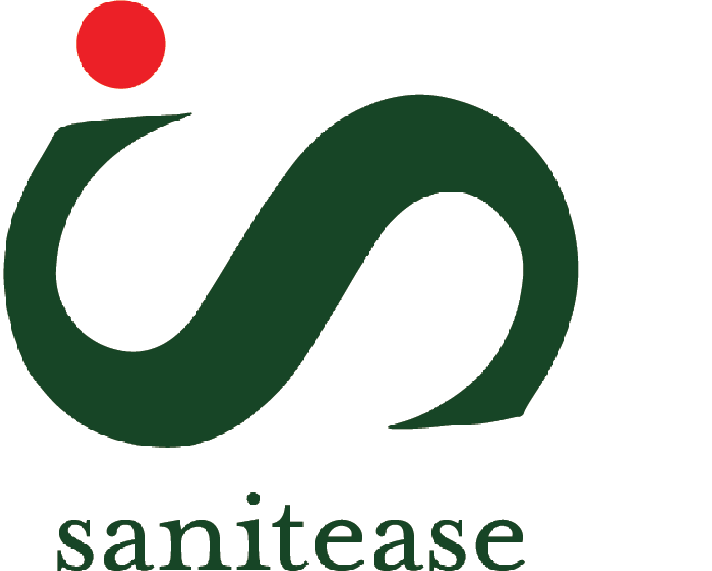

Sanitease
Overview
I created this logo for one of my father's ventures in India, Sanitease. It is an initiative to donate biodegradable sanitary napkins to underprivileged girls and women in the rural parts of India. I was given a simple brief that the logo should have a story behind it.
Initial process
Starting the ideation of this logo was a bit challenging for me because it was difficult for me to illustrate a story in just one logo. However, I started scrolling through Pinterest but didn't find substantial inspiration. Then, one day, while talking to my mother, I noticed this red dot she wears on her forehead every day, a bindi, a beauty mark many Indian women wear. So I thought it would be a nice story to incorporate that in my design. It also indicates a period dot, which I wanted to embrace because women's menstrual cycle is still taboo in rural India.
Brainstorming- Sketching
My next step was to brainstorm different ideas; hence I started sketching some logos on paper and made sure to keep the red dot as an element while designing. Here are a few sketches I made and personally liked the redesign I have marked in red below. While sketching different ideas, I saw that by rotating the letter 'S,' it looks like a dancing woman, and I believe that a dancing woman can spread the emotion of happiness and express themselves freely. Many women in rural India use dancing as a form of expression, so as a whole with the red dot and the story of a dancing woman helped me to curate a logo as per the brief.
Colour selection
I was very sure from the beginning that I wanted to use green and red as dominant colours. Green to signify the sustainability of the brand and red to show the period dot.
Type Selection
After deciding on the colours, I had to look for a suitable typeface to match the brand's aesthetic. While looking for fonts, especially in the book Thinking with Type, by Ellen Lupton, I found this font called Mrs. Eaves and found that it is one of the most feminine serif fonts, and it was the best fit for this initiative.
Reflection
Overall, I was pretty happy with the result, and I believe that my reasoning does justice to the design. Furthermore, the client was also pretty happy.